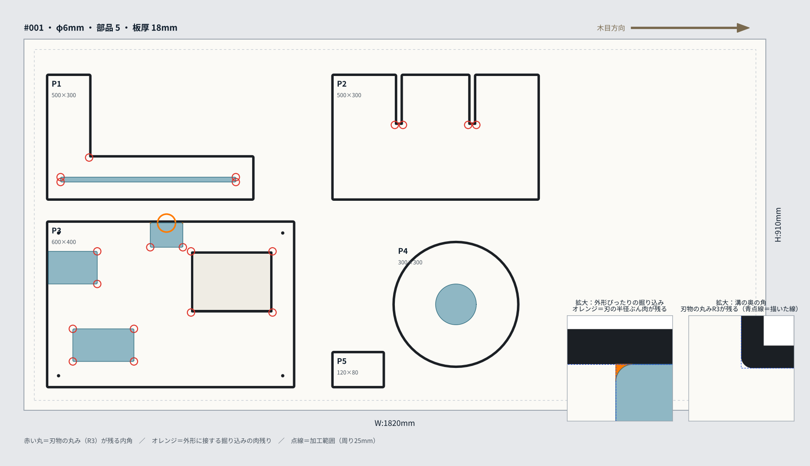

これは「概算」です。 PDF や規定外の DXF からは、FABNODE が部品を読み取って自動で板に並べ、概算を出します。正式な自動見積もり（その場で確定額）にしたい場合は
テンプレート形式の DXF で入れてください。
対象はパーツ加工（板からの切り出し）です。 組み立て後の完成図面・三面図からは見積もれません。
部品ごとの平面図にしてください。
1線と塗りの約束ごと
読み取りは「閉じた線の入れ子」と「塗り」で判断します。色は問いません。
| 描くもの | 読み取り | 補足 |
|---|
| いちばん外の閉じた線 | 部品の外形（切り抜き・貫通） | 線の内側が部品として残ります |
| 外形の中の閉じた線 | 穴・窓（貫通で抜く） | さらにその中の線は「別の部品」（入れ子で交互に判定） |
| 塗りつぶし・ハッチングのある閉じた線 | 掘り込み（ポケット）・溝 | 深さは見積もりページで入力（番号つきで聞きます） |
| 小さい円（直径 30mm 以下） | 穴あけ（ドリル） | 直径をそのまま使います。刃物径より小さい穴は別途お見積もり |
| 点線の大きな四角 | 板の枠（あれば縮尺の基準） | 無くても構いません |
線は必ず閉じてください（始点と終点がつながっている）。開いた線は外形として読めずエラーになります。線の重なり・二重線も避けてください。

サンプル PDF を読み取った結果。P1〜P5 が部品、青が掘り込み、赤丸は刃物の丸み（R3）が残る内角、オレンジは外形に接する掘り込みの肉残り
2全体寸法 X, Y（PDF のとき）
- PDF には実寸の情報が無いので、図全体の横幅 X と高さ Y（mm）を見積もりページで入力します。点線の板の枠があればその枠、無ければ部品全体の外接の大きさです。
- X と Y の比が図と 5% 以上ずれていると注意が出ます（どちらかの入力ミスの可能性）。
- DXF は mm のまま読みます（入力不要）。
3線ごとの種類を直す（簡易CAM）
自動の判定が違っていたら、見積もりページの「線ごとの種類を直す」で、線ごとに 外形／穴・窓／掘り込み（深さ）／穴あけ／使わない を選び直せます。描き直さなくて済みます。
- 「使わない」にすると、その線は加工しません（寸法線・補助線・文字の輪郭が線として読まれたとき用）。
- 掘り込みは深さ（mm）を入れてください。未入力のときは板厚の 1/3 を仮に使います。
4外形に接する掘り込み（肉残り）
刃物は丸いので、掘り込みの線を外形に「ぴったり」描くと、外形の内側に刃物半径（φ6 なら 3mm）ぶんの肉が残ります。
- 外形まで掘り切りたいときは、掘り込みの線を外形から 3mm 以上はみ出させて描いてください。
- はみ出しが足りないと「肉残り」の注意（W05）が出て、プレビューにオレンジで表示されます。
5板への自動配置
- 部品は FABNODE が自動で板（36版 1820×910 ／ 48版 2440×1220）に並べます。材料費が安い方の板を選びます。
- 歩留まり優先（初期値）: 90° 回転も使って枚数を減らします。木目優先: 部品の長辺を木目（板の長辺）にそろえます（180° 回転のみ）。
- 余白（板のふち 25/30mm・部品の間 35/40mm）は自動で確保します。
6読み取れない PDF
- スキャン・写真・画像を貼っただけの PDF は線が取れません → 見積もり相談からお送りください。
- 文字（寸法・注記）は線として読まれることがあります。その線は「使わない」にしてください（アウトライン化しないのが確実です）。
7サンプル PDF
上の図のサンプルです。描き方の見本として、またそのまま入れて動きを試すのにお使いください（全体寸法 X 1820 / Y 910）。
▼ サンプルPDFをダウンロード
▶ Web見積もりで入れてみる ／ エラー・注意の一覧 ／ DXF の作り方（テンプレート形式）